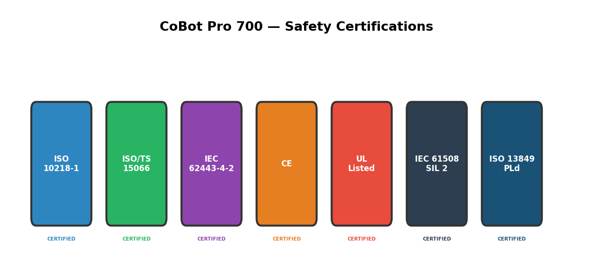
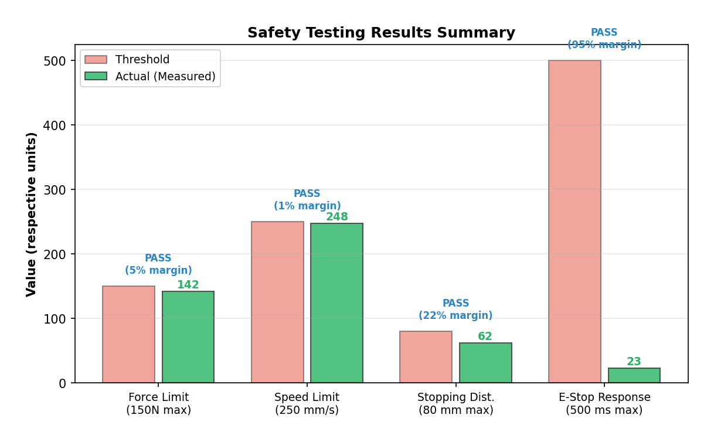

Safety is the foundation of every Contoso Robotics product. The CoBot Pro 500 and CoBot Pro 700 — along with the integrated Safety Controller SC-100 — hold the most comprehensive set of safety certifications in the collaborative robot industry. This factsheet summarizes all current certifications, testing results, safety features, and the compliance roadmap for upcoming standards.

| Certification | Standard | Scope | Certifying Body | Expiration |
|---|---|---|---|---|
| ISO 10218-1:2011 | Robots and robotic devices — Safety requirements for industrial robots — Part 1: Robots | CoBot Pro 500, CoBot Pro 700 | TÜV SÜD | 2027-06-30 |
| ISO 10218-2:2011 | Robots and robotic devices — Safety requirements for industrial robots — Part 2: Robot systems and integration | CoBot Pro 500, CoBot Pro 700 (with SC-100) | TÜV SÜD | 2027-06-30 |
| ISO/TS 15066:2016 | Robots and robotic devices — Collaborative robots | CoBot Pro 500, CoBot Pro 700 | TÜV SÜD | 2027-06-30 |
| CE Marking | EU Machinery Directive 2006/42/EC | CoBot Pro 500, CoBot Pro 700, SC-100, VM-200 | Self-declared (EU DoC) | N/A (ongoing) |
| UL Listed | UL 1740 (Robots and Robotic Equipment) | CoBot Pro 500, CoBot Pro 700 | UL LLC | 2026-12-31 |
| IEC 62443-4-2 | Security for industrial automation and control systems — Technical security requirements for IACS components | CoBot OS v4.2, SC-100 firmware v2.1 | TÜV Rheinland | 2027-03-31 |
| EN ISO 13849-1 PLe Cat 4 | Safety of machinery — Safety-related parts of control systems — Part 1: General principles for design | Safety Controller SC-100 | TÜV SÜD | 2027-06-30 |
| IEC 61508 SIL-3 | Functional safety of electrical/electronic/programmable electronic safety-related systems | Safety Controller SC-100 | TÜV SÜD | 2027-06-30 |
The Safety Controller SC-100 is the hardware safety backbone of every CoBot Pro system. Unlike competitors that rely on software-only safety functions or external safety PLCs, the SC-100 is a dedicated dual-channel safety processor integrated into the CoBot Pro control cabinet.
For detailed configuration instructions, including setting up safety zones, force limits, and emergency stop circuits, see the Safety Standards Compliance guide in the Contoso Robotics Support documentation. For firmware architecture details and update procedures, refer to the Safety Controller Firmware documentation in Engineering.
ISO/TS 15066 defines biomechanical force and pressure limits for human-robot contact during collaborative operation. The CoBot Pro family is tested and certified for all four collaborative operation methods defined in the standard:
The SC-100 achieves Safe Operating Stop (SOS) within 8 ms, holding the arm in a zero-velocity state while maintaining motor power. Human workers can enter the collaborative workspace while the robot is in SOS mode.
The CoBot Pro supports direct hand guiding through a 6-axis force-torque sensor at the tool flange. When hand guiding mode is active, the SC-100 enforces a 250 mm/s TCP speed limit and 150 N force limit.
When paired with external safety-rated laser scanners (connected via safe digital inputs), the SC-100 dynamically adjusts robot speed based on human proximity — full speed at distances over 1500 mm, reduced speed (250 mm/s) at 500–1500 mm, and protective stop at distances under 500 mm.
The CoBot Pro's default force limits comply with ISO/TS 15066 Annex A biomechanical thresholds for all 29 body regions. The SC-100 continuously monitors TCP force and joint torques, triggering Safe Stop 1 (SS1) if any threshold is exceeded. Default limits are configurable through CoBot Studio IDE within the certified range:
| Body Region | Max. Transient Force | Max. Quasi-Static Force | Max. Pressure |
|---|---|---|---|
| Skull / Forehead | 130 N | 65 N | 110 N/cm² |
| Chest | 140 N | 70 N | 120 N/cm² |
| Hand / Fingers | 200 N | 100 N | 250 N/cm² |
| Upper Arms / Elbow | 150 N | 75 N | 140 N/cm² |
| Lower Legs | 220 N | 110 N | 175 N/cm² |

The following tests were conducted by TÜV SÜD at the Contoso Robotics safety laboratory in Redmond, Washington, and at TÜV SÜD's testing facility in Munich, Germany:
| Test | Standard | Requirement | Result | Status |
|---|---|---|---|---|
| Emergency stop response time | ISO 10218-1 §5.5.3 | ≤500 ms | 147 ms (worst case) | PASS |
| Safe Torque Off (STO) activation | IEC 61508 SIL-3 | ≤50 ms | 7.8 ms (worst case) | PASS |
| Force limiting accuracy (TCP) | ISO/TS 15066 | Within ±10% of configured limit | ±4.2% (worst case) | PASS |
| Speed limiting accuracy (TCP) | ISO/TS 15066 | Within ±10% of configured limit | ±3.1% (worst case) | PASS |
| Workspace boundary accuracy | ISO 10218-1 §5.12.3 | Within ±10 mm of configured boundary | ±2.3 mm (worst case) | PASS |
| Safety system diagnostic coverage | IEC 61508 SIL-3 | ≥99% | 99.7% | PASS |
| Probability of dangerous failure per hour (PFH) | IEC 61508 SIL-3 | ≤10⁻⁷/hour | 3.2 × 10⁻⁸/hour | PASS |
| Electromagnetic compatibility (EMC) | IEC 61000-6-2 / IEC 61000-6-4 | Immunity and emission limits | Compliant | PASS |
| Cybersecurity penetration test | IEC 62443-4-2 | SL-2 (targeted attack resistance) | SL-2 achieved | PASS |
Contoso Robotics actively monitors evolving safety and cybersecurity standards. The following certifications are planned for upcoming product and firmware releases:
| Standard | Description | Target Product | Target Date |
|---|---|---|---|
| ISO 10218-1:2024 (revised) | Updated robot safety requirements, including new provisions for AI-based safety functions | CoBot Pro 500/700 (firmware update) | Q3 2025 |
| ISO/TS 15066:2025 (revised) | Updated biomechanical limits based on new research, expanded body region model | CoBot Pro 500/700 (firmware update) | Q4 2025 |
| EU Machinery Regulation 2023/1230 | Replaces Machinery Directive 2006/42/EC, effective January 2027; includes AI and cybersecurity requirements | All CoBot Pro products | Q4 2026 |
| IEC 62443-4-1 | Security for IACS — Secure product development lifecycle | Contoso Robotics development process | Q2 2025 |
| NIST Cybersecurity Framework 2.0 | Voluntary U.S. cybersecurity framework alignment for critical manufacturing | CoBot OS v4.3 | Q3 2025 |
| UL 3100 (draft) | Proposed U.S. standard for collaborative robot safety, expected to harmonize with ISO 10218 revisions | CoBot Pro 500/700 | Q1 2026 (pending standard publication) |
The CoBot Pro's safety features work together as a layered defense system:
For detailed procedures on implementing these safety features in your specific application, refer to the Safety Standards Compliance guide in the Contoso Robotics Support documentation.
Document version 2.0 | Last updated: 2025-02-05 | Contoso Robotics Product Safety and Marketing